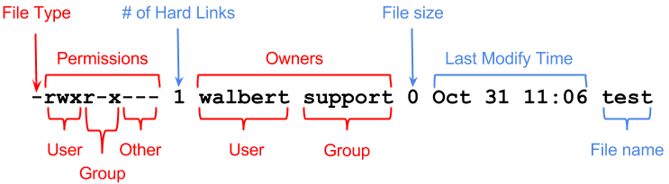
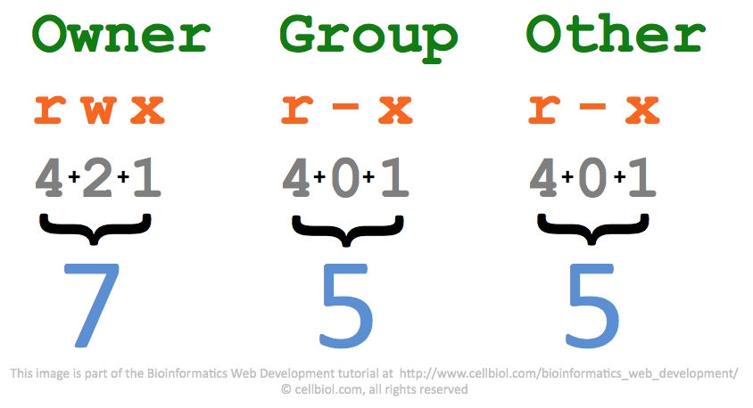

โครงสร้าง Linux File System และ Permission
File System ทำหน้าควบคุมการจัดเก็บ ไฟล์ต่างๆ ไปเก็บไว้ใน Partition ของ hardisk โดยจะทำหน้าที่แบ่ง ไฟล์ใหญ่ๆ ออกเป็นส่วนเล็กๆ และนำไปเก็บไว้ในส่วนต่างๆ ของ hardisk

รูปแบบที่เก็บก็จะเก็บในลักษณะของ โครงสร้างของ Folder ในแต่ละ ระบบปฎิบัติการหนึ่งจะมี root file system หรือ "/" อยู่ระดับโครงสร้างบนสุด โดยขอให้ทำความเข้าใจว่าโครงสร้างของ Folder และ File ต่างๆ นั้นจะเป็นในลักษณะของ Logical System ไม่ใช่เป็น แบบ Physical ในความเป็นจริง file ต่างๆ จัดเก็บอยู่ใน disk ที่ต่าง Partition กัน หรือ อยู่กันบน Disk คนละก้อนกัน แต่สำหรับใน Layer ของ File system ก็เปรียบเสมือนอยู่บน File System เดียวกัน
# cd /
# ls -lF
total 20
lrwxrwxrwx. 1 root root 7 Aug 23 07:08 bin -> usr/bin/
dr-xr-xr-x. 5 root root 4096 Nov 11 13:39 boot/
drwxr-xr-x. 18 root root 3120 Nov 16 07:26 dev/
drwxr-xr-x. 132 root root 8192 Nov 16 14:26 etc/
drwxr-xr-x. 5 root root 52 Nov 12 03:05 home/
lrwxrwxrwx. 1 root root 7 Aug 23 07:08 lib -> usr/lib/
lrwxrwxrwx. 1 root root 9 Aug 23 07:08 lib64 -> usr/lib64/
drwxr-xr-x. 2 root root 6 Nov 5 2016 media/
drwxr-xr-x. 2 root root 6 Nov 5 2016 mnt/
drwxr-xr-x. 4 root root 48 Nov 12 03:01 opt/
dr-xr-xr-x. 162 root root 0 Nov 16 14:26 proc/
dr-xr-x---. 6 root root 276 Nov 12 14:35 root/
drwxr-xr-x. 36 root root 1180 Nov 16 14:26 run/
lrwxrwxrwx. 1 root root 8 Aug 23 07:08 sbin -> usr/sbin/
drwxr-xr-x. 2 root root 6 Nov 5 2016 srv/
dr-xr-xr-x. 13 root root 0 Nov 16 07:26 sys/
drwxrwxrwt. 36 root root 4096 Nov 16 14:26 tmp/
drwxr-xr-x. 13 root root 155 Aug 23 07:08 usr/
drwxr-xr-x. 1 vagrant vagrant 128 Nov 11 10:15 vagrant/
drwxr-xr-x. 20 root root 282 Nov 11 13:31 var/
การ Mount File System และ Disk
Linux kernel จะทำการ เชื่อม ระหว่าง file system และ Partition เรียกว่า การ mounting
ด้วยคำสั่ง mount linux สามารถ mount file system กับ Disk นอกจากนั้นยังใช้คำสั่ง mount ไปเชื่อมกับ iso image และ remote linux file system
# ls -l /dev/sda*
brw-rw----. 1 root disk 8, 0 Nov 16 07:26 /dev/sda
brw-rw----. 1 root disk 8, 1 Nov 16 07:26 /dev/sda1
brw-rw----. 1 root disk 8, 2 Nov 16 07:26 /dev/sda2
# mount | grep "/dev"
ชนิดของ File System ด้วยคำสั่ง df -Th
# df -Th
Filesystem Type Size Used Avail Use% Mounted on
/dev/mapper/cl-root xfs 37G 3.9G 34G 11% /
devtmpfs devtmpfs 1.9G 0 1.9G 0% /dev
tmpfs tmpfs 1.9G 0 1.9G 0% /dev/shm
tmpfs tmpfs 1.9G 8.8M 1.9G 1% /run
tmpfs tmpfs 1.9G 0 1.9G 0% /sys/fs/cgroup
/dev/sda1 xfs 1014M 258M 757M 26% /boot
tmpfs tmpfs 380M 12K 380M 1% /run/user/42
vagrant vboxsf 466G 53G 414G 12% /vagrant
tmpfs tmpfs 380M 0 380M 0% /run/user/1000
# lsblk -f
NAME FSTYPE LABEL UUID MOUNTPOINT
sda
├─sda1 xfs 5415cfa7-fe39-4660-80d6-edd9bce71cf5 /boot
└─sda2 LVM2_member 0e82iE-fRXw-jQyw-M0R3-jQ3P-g0af-HLjZlU
├─cl-root xfs 2872e536-d348-4e10-8ad1-5fa30231f5d7 /
└─cl-swap swap c5f4bdfc-f7f7-4d36-a582-6e7fcf87c483 [SWAP]
sr0 iso9660 VBox_GAs_5.2.0 2017-10-18-05-26-49-71
คำสั่ง blkid เพื่อแสดงคุณสมบัติ disk partition
# blkid /dev/sda1
/dev/sda1: UUID="5415cfa7-fe39-4660-80d6-edd9bce71cf5" TYPE="xfs"
Static file ที่เกี่ยวของกับการ mount ได้แก่ /etc/fstab
# cat /etc/fstab
#
# /etc/fstab
# Created by anaconda on Wed Aug 23 00:08:41 2017
#
# Accessible filesystems, by reference, are maintained under '/dev/disk'
# See man pages fstab(5), findfs(8), mount(8) and/or blkid(8) for more info
#
/dev/mapper/cl-root / xfs defaults 0 0
UUID=5415cfa7-fe39-4660-80d6-edd9bce71cf5 /boot xfs defaults 0 0
/dev/mapper/cl-swap swap swap defaults 0 0
นอกจาก จะทำหน้าสำหรับการจัดเก็บ แล้วยังรับผิดชอบในการจัดการเกียวกับ Permissionsทุก File และ Folder ควบคุมการเข้าถึง (Access Controller) โดยจะใช้ ข้อมูลดังนี้
กลุ่ม permission ประกอบด้วย u - owner, g - group, o - others

ชนิด ของ permision ได้แก่ r - read, w - write, x-eXecute
# touch test
# ls -l test
-rw-r--r--. 1 root root 0 Nov 16 15:14 test
การเปลี่ยน permission ด้วยคำสั่ง chmod
# chmod g+x test
# ls -l test
-rw-r-xr--. 1 root root 0 Nov 16 15:14 test
# chmod o-rwx test
# ls -l test
-rw-r-x---. 1 root root 0 Nov 16 15:14 test
การเปลี่ยนแปลง owner และ group ด้วยคำสั่ง chown
# chown nobody:wheel test
# ls -l test
-rw-r-x---. 1 nobody wheel 0 Nov 16 15:14 test
permission แบบ พิเศษ โดยการเพิ่ม flag อีก สองชนิด คือ
s - Set UserID และ Set Group ID
t - The sticky flag
# chmod u+s test
# ls -l test
-rwSr-x---. 1 nobody wheel 0 Nov 16 15:14 test
หมายถึง ใครก็ตามที่มีสิทธิ รัน file นี้ จะรัน ในฐานะของ Owner file เช่นคำสั่ง /bin/passwd
# ls -l /bin/passwd
-rwsr-xr-x. 1 root root 27832 Jun 10 2014 /bin/passwd
การอ้างอิงในระบบตัวเลข ฐาน 8 (Octal representation)

การเปลี่ยนค่าของ permission นอกจากใช้ระบบตัวอักษร ในคำสั่ง chmod ยังสามารถใช้ ระบบเลขฐาน 8
"r" = 4, "w" = 2, "x" = 1, rwx = 4 + 2 + 1 =7, rx = 4+1 = 5
# chmod 755 test
# ls -l test
-rwxr-xr-x. 1 nobody wheel 0 Nov 16 15:14 test
เพิ่ม Disk ให้กับ Linux
เราสามารถเพิ่มเติม Disk ขึ้นมาใช้งานเพื่อใช้สำหรับการเก็บข้อมูล ในการทดสอบ ด้วย file vagrant file ได้เพิ่ม disk อีก สองก้อน
vim Vagrantfile
# -*- mode: ruby -*-
# vi: set ft=ruby :
Vagrant.configure("2") do |config|
config.vm.box = "bento/centos-7.3"
config.vm.network "private_network", ip: "192.168.33.100"
config.vm.provider "virtualbox" do |vb|
unless File.exist?('./secondDisk.vdi')
vb.customize ['createhd', '--filename', './secondDisk.vdi', '--variant', 'Fixed', '--size', 10 * 1024]
end
unless File.exist?('./thirdDisk.vdi')
vb.customize ['createhd', '--filename', './thirdDisk.vdi', '--variant', 'Fixed', '--size', 10 * 1024]
end
vb.memory = "4096"
vb.cpus = "2"
vb.customize ['storageattach', :id, '--storagectl', 'SATA Controller', '--port', 1, '--device', 0, '--type', 'hdd', '--medium', './secondDisk.vdi']
vb.customize ['storageattach', :id, '--storagectl', 'SATA Controller', '--port', 2, '--device', 0, '--type', 'hdd', '--medium', './thirdDisk.vdi']
end
end
เราสามารถใช้คำสั่ง lsblk เพื่อดูว่า มีการใช้งาน disk อย่างไรบ้าง
# lsblk
NAME MAJ:MIN RM SIZE RO TYPE MOUNTPOINT
sda 8:0 0 40G 0 disk
├─sda1 8:1 0 1G 0 part /boot
└─sda2 8:2 0 39G 0 part
├─cl-root 253:0 0 37G 0 lvm /
└─cl-swap 253:1 0 2G 0 lvm [SWAP]
sdb 8:16 0 10G 0 disk
sdc 8:32 0 10G 0 disk
ขั้นตอนการใช้งาน
- การใช้งานจะใช้คำสั่ง fdisk สำหรับแบ่ง partitions
- Format สร้างfile system ด้วยคำสั่ง เช่น mkfs.ext2 mkfs.ext3 mkfs.ext4 mkfs.minix mkfs.xfs
- สร้าง folder และทำการ mount
- เพิ่มเติมใน /etc/fstab
# fdisk /dev/sdb
Welcome to fdisk (util-linux 2.23.2).
Changes will remain in memory only, until you decide to write them.
Be careful before using the write command.
Device does not contain a recognized partition table
Building a new DOS disklabel with disk identifier 0x99b53f52.
Command (m for help): n #<--- n คำสั่งสร้าง new partition
Partition type:
p primary (0 primary, 0 extended, 4 free)
e extended
Select (default p): p #<---- p สร้าง แบบชนิด primary
Partition number (1-4, default 1): #<---- Enter ผ่านยอมรับค่า default
First sector (2048-20971519, default 2048): #<--- Enter ผ่าน
Using default value 2048
Last sector, +sectors or +size{K,M,G} (2048-20971519, default 20971519): #<---- Enter ผ่าน
Using default value 20971519
Partition 1 of type Linux and of size 10 GiB is set
Command (m for help): w # write เพื่อบันทึกการเปลี่ยนแปลง
The partition table has been altered!
Calling ioctl() to re-read partition table.
Syncing disks.
Format partition /dev/sdb1 ให้เป็น ชนิด ext4
# mkfs.ext4 /dev/sdb1
mke2fs 1.42.9 (28-Dec-2013)
Filesystem label=
OS type: Linux
Block size=4096 (log=2)
Fragment size=4096 (log=2)
Stride=0 blocks, Stripe width=0 blocks
655360 inodes, 2621184 blocks
131059 blocks (5.00%) reserved for the super user
First data block=0
Maximum filesystem blocks=2151677952
80 block groups
32768 blocks per group, 32768 fragments per group
8192 inodes per group
Superblock backups stored on blocks:
32768, 98304, 163840, 229376, 294912, 819200, 884736, 1605632
Allocating group tables: done
Writing inode tables: done
Creating journal (32768 blocks): done
Writing superblocks and filesystem accounting information: done
สร้าง folder /data และ mount
# mkdir /data
# mount -t ext4 /dev/sdb1 /data
# mount | grep sdb1
...
/dev/sdb1 on /data type ext4 (rw,relatime,seclabel,data=ordered)
# umount /data
vi /etc/fstab
...
/dev/sdb1 /data ext4 defaults 0 0
หลังจากเพิ่ม บรรทัดใน /etc/fstab และใช้คำสั่ง mount -a ให้ อ่าน ไฟล์ /etc/fstab
# mount -a
# mount | grep sdb1
/dev/sdb1 on /data type ext4 (rw,relatime,seclabel,data=ordered)
ให้ทดสอบ persistance mounts ด้วยการ reboot
reboot